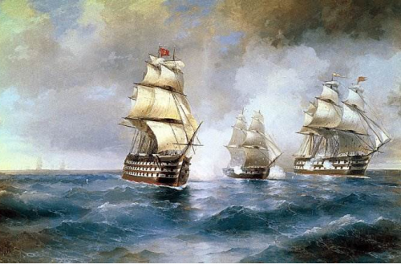
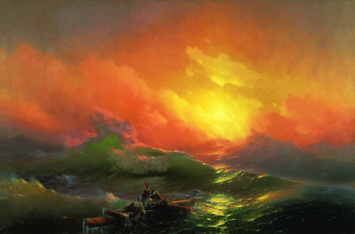
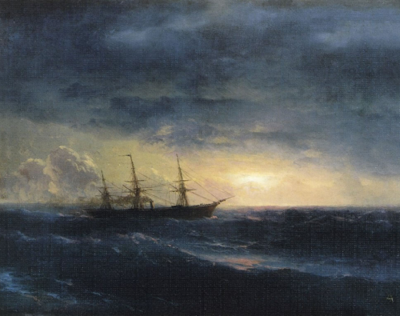

ПРОФИЛЬ ХУДОЖНИКА
ПРОФИЛЬ ХУДОЖНИКА
Иван Константинович Айвазовский
Великий русский художник армянского происхождения. Годы жизни: 1817 – 1900. Он был меценатом, а также почетным членом римской, парижской и амтердамской Академий художеств.
ДЕТСТВО И ЮНОСТЬ
Родился Иван Константинович 17 (29) июля 1817 г. в Феодосии. Ещё в детстве у Ивана были выявлены способности к музыке и рисованию. Первые уроки художественного мастерства были даны ему известным феодосийским архитектором, Я.Х.Кохом.
Став выпускником училища, Айвазовский поступил в симферопольскую гимназию. После ее окончания, по протекции феодосийского градоначальника, А.И.Казначеева, будущего художника зачислили в столичную Императорскую Академию художеств.
ДАЛЬНЕЙШЕЕ ОБУЧЕНИЕ
В августе 1833 г. Айвазовский прибыл в Санкт-Петербург. Он учился у таких мастеров, как М.Воробьев, Ф.Таннер, А.И. Зауервейд. Его картины, написанные во время обучения, были удостоены серебряной медали. Айвазовский был настолько одаренным студентом, что его выпустили из Академии на 2 года раньше срока. Для самостоятельного творчества Ивана Константиновича отправили сперва в родной Крым, а потом в заграничную командировку на 6 лет.
КРЫМСКО-ЕВРОПЕЙСКИЙ ПЕРИОД
Весной 1838 г. Айвазовский уехал в Крым. Там он создавал морские пейзажи, занимался батальной живописью. В Крыму он пробыл 2 года. Затем вместе с В.Штернбергом, своим товарищем по пейзажному классу, художник отправился в Рим. По дороге они посетили Флоренцию и Венецию, где состоялось знакомство Айвазовского с Н.Гоголем.
ПРИЗНАНИЕ ТАЛАНТА
1844 г. был знаковым для художника. Он стал главным живописцем российского Главного морского штаба. Через 3 года ему присвоили звание профессора Академии художеств Санкт-Петербурга. Для детей, интересующихся жизнью великого художника, важно знать, что главными его работами являются картины “Девятый вал” и “Черное море”. Но сражениями и морскими пейзажами его творчество не ограничивалось. Он создал серию крымских и украинских пейзажей, написал несколько исторических полотен. Всего за свою жизнь Айвазовский написал более 6000 полотен.
ИНТЕРЕСНЫЕ ФАКТЫ
Изучая краткую биографию Ивана Айвазовского, следует знать некоторые интересные факты из его жизни.
• Настоящее имя художника – Ованес Айвазян. Отец будущего мастера, Константин (Геворг), армянин по происхождению, после переезда в
Феодосию писал фамилию на польский манер: «Гайвазовский»
• Великий художник, которому повезло быт признанными при жизни, знавал нужду. Однажды ему заплатили за работу не деньгами, а колбасой.
• Заработанные деньги Иван Константинович
тратил не только на свою семью, но и на родной город. На его средства в Феодосии была построена галерея, школа и музей. Также художник способствовал прокладке железнодорожного пути в Джанкой.